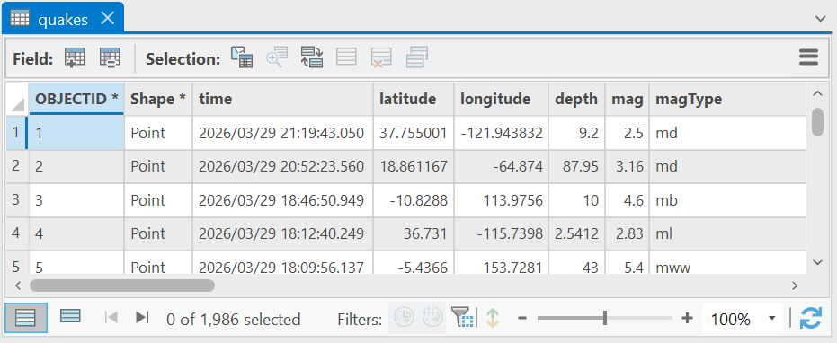
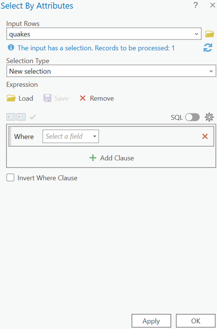
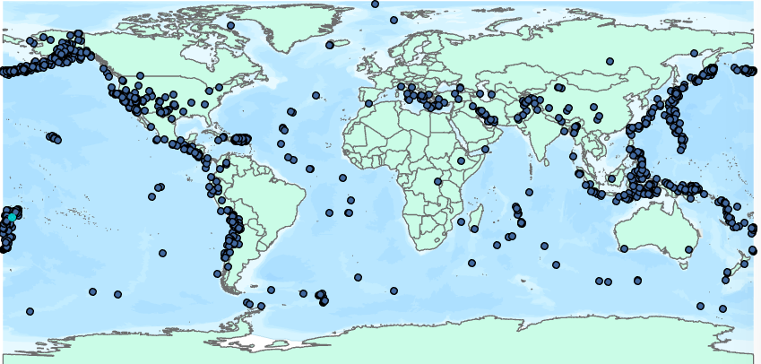
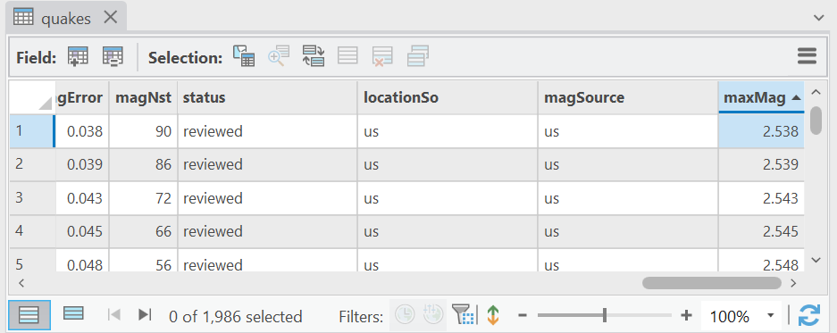

2 Interacting with spatial data
A powerful component of GIS is the ability to visualize spatial data and interact directly with it’s visual representation. In this section, we’ll look at tools for interacting with spatial data, including changing our view of it,
Zooming, panning, and selecting
Try to click and hold, and drag the map window. This will pan, or move the visible window around.
In the Map ribbon, try zooming with the Fixed Zoom In/Fixed Zoom Out buttons. If your mouse has a scroll wheel, you can use the wheel to zoom in and out.

You can also zoom by holding the Z key while holding down the mouse button and moving the mouse. If you want to use zoom in using a rectangle, press and hold the Shift key while drawing a rectangle. This will zoom the window to that rectangle (or its nearest approximation scaling the window dimensions).
Click on the Go Back to Previous Extent button. This returns you to the last view you were using. This is very useful if you accidentally pan or zoom from a location where you are working.

- Click on the Full Extent button. This takes you back out to the full extent of the features currently in the Table of Contents. This is very useful if you need to zoom or pan to a new location quickly, or if you lose track of where you are while panning and zooming.
- You can also zoom in on a feature of interest. First, click the Select button, then click on Iceland.
 |
 |
- Iceland will appear with a blue outline. This indicates that this polygon has been selected. Now click on Zoom to Selection.

- You should now see Iceland take up most of the view.

- When objects are selected, any analyses or edits are only conducted with the selected data. If you look at the dropdown menu under the Select button, you will see additional options for drawing your selection: polygon, lasso (freehand), circle, or line. You can remove a selection with the Clear button.

Viewing and using attribute data
Spatial data associates locations with other data about those places. This additional data is stored as an attribute table.
- Click on the Explore button, and then click on one of the features from the countries dataset in the map window. A window should pop up, providing location and attribute data from that feature.

- In the catalog pane, add the quakes shapefile. This is earthquake data obtained from the US Geological Survey. It should look something like this:

If you can’t see some or all of the quakes layer, it may be hidden underneath the countries layer or the basemap layers. The layers in the map window are drawn in the order they appear in the Table of Contents. Make sure that the quakes layer is positioned at the top of the drawing order in the Table of Contents; if not, click the layer and drag it to the top.
Right click on the quakes layer and select Open Attribute Table. The data is now presented in a pane at the bottom of the screen, only in table form. Here you can see each point as a row with its associated data. Each column is called a “Field”, and are filled data: OBJECTID (a unique ID for the record), Shape (which tells us what kind of data it is), the time of the quake, latitude, longitude, depth, magnitude (mag), the method used to estimate magnitude (magType), and so on.

To the left of each row is a grey box. Try clicking one of these; it should highlight the row, as well as the associated point on the map. This serves the same function as the Select tool we saw earlier when we selected Iceland. You can select more than one row by holding down the Ctrl button while you click, or Shift to select several successive entries.
At the top of the table, click the Clear Selection button.This will eliminate the selection you’ve made so far.

Other buttons here give you additional options. For example, the Select By Attribute button allows you to select only those data that meet a particular criteria. You can construct a query based on the fields (columns) in the table.

 For example, let’s say you wanted to examine only those with a magnitude greater than 7. To do this, in the box that starts with Where, select mag field. This will give you additional options, to which you will modify so that the expression reads “Where mag is greater than 7”. Clicking Apply will select only those features with a mag value greater than 7.

Try a couple of other queries, and then clear the selection when you are finished.
Switch Selection inverts the selection according to whatever is presently selected. For example, try selecting quakes greater than magnitude 7 again. Now if you click on Switch Selection, only those less than or equal to 7 will be selected. Be sure to clear your selections when you’re done.

- Add Field adds a new attribute field to the data.

- The three lines button provides additional options for working with attributes. In particular, the Export option will let you export the data as a table object (e.g., CSV file).

Now, try right clicking on the heading of the depth column. You’ll notice that when you do this, you get a few additional options. Sort Ascending and Sort Descending are self-explanatory, and are helpful for quickly sorting data. You can get rid of an unneeded field by clicking Delete Field.
Possibly one of the more useful options here is Calculate Field,which can be used to perform mathematical or logical operations on the data.
For example, each of the quakes has a magError attribute, which tells us the standard error on the magnitude estimate out to one standard deviation. Let’s say we wanted an attribute which would tell us the maximum magnitude within the error range, or the how big the earthquakes could have been. To get this, we would need to add the error to the magnitude estimate. First click Add Field. This brings up a new interface to add fields, with a new entry at the bottom. Call the field maxMag and select the Float data type (which is short for floating-point number, and for our purposes means it will hold a decimal value), then click X. When it asks if you would like to save the results, click Save.
A new field called maxMag should appear at the right side of the table. Right click on the heading for the maxMag field and select Calculate Field. A window like this should appear:

In the Fields pane, you’ll see the current attribute fields for the feature. In the right hand pane are some mathematical functions (for instance, Abs( ) is absolute value), including the arithmetic operators as buttons at the bottom. You can calculate new values by building an expression with these options.
Double click on the mag field heading, which then populates the bottom pane with that term surround by exclamation marks, e.g. !mag!. Then click the addition symbol + to add this to the expression. Finally, double click on magError and add that to the equation. The final product should look like maxMag = !mag! + !magError!
Push OK. The result should be a new field with the maximum magnitude out to one standard deviation for each entry in the table.
